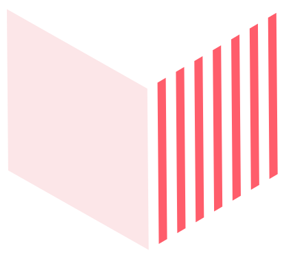

Accéder à l'INET
Quatre voies distinctes pour rejoindre l'élite de la fonction publique territoriale. Chaque profil a sa porte d'entrée.
Concours · Tour extérieur
4 voies d'accès

Concours externe
La voie ouverte aux jeunes diplômés. Bac+5 minimum. Un tremplin vers les plus hautes responsabilités de la République.

Tour extérieur
Réservé aux cadres en exercice justifiant de 8 ans d'expérience. Une reconnaissance de votre trajectoire professionnelle.

Détachement
Passerelle entre fonctions publiques d'État, hospitalière et territoriale. Faites circuler vos compétences au-delà des silos.

Intégration directe
Pour les profils d'exception issus du secteur privé ou de la haute fonction publique. L'expertise au service du territoire.